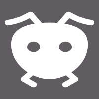

<ion-header [translucent]="true">
  <ion-toolbar class="ion-text-center" color="primary">
    <ion-title>
      Le frigo des fourmis
    </ion-title>
  </ion-toolbar>
</ion-header>

<ion-content class="content" [fullscreen]="true">
  
<div class="menuButtons">
    <ion-button class="button" color="tertiary" routerLink="/frigo">Mon frigo</ion-button>
    <ion-button class="button" color="tertiary" routerLink="/recherche">Rechercher un aliment</ion-button>
</div>
</ion-content>
<ion-footer>
  <ion-toolbar class="ion-text-center" color="primary">
    <ion-title>Copyright: test</ion-title>
  </ion-toolbar>
</ion-footer>
